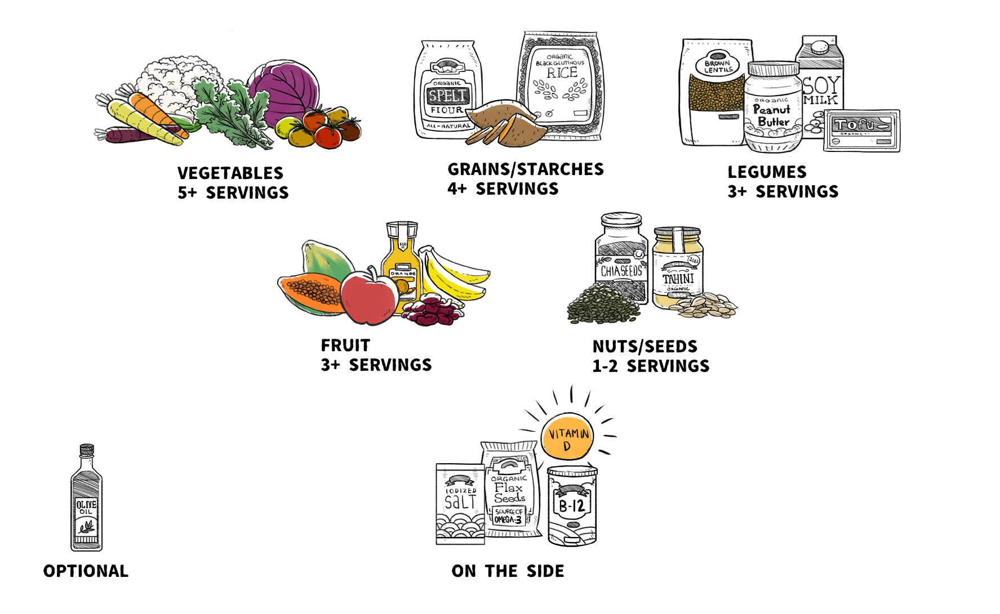
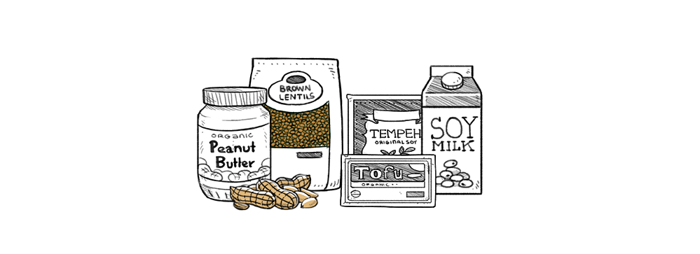
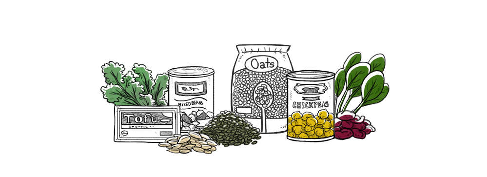
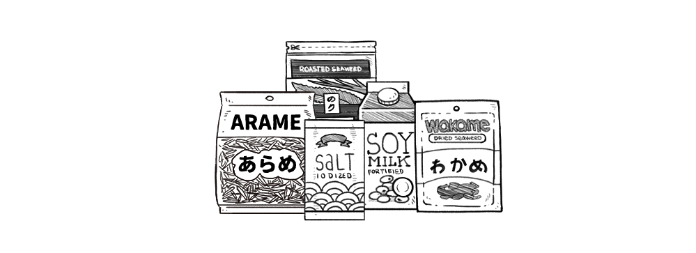
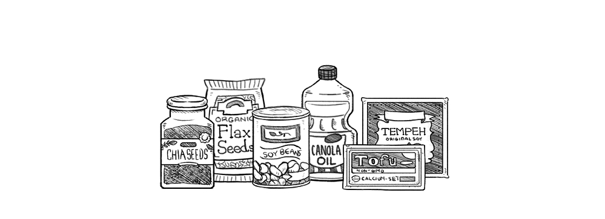
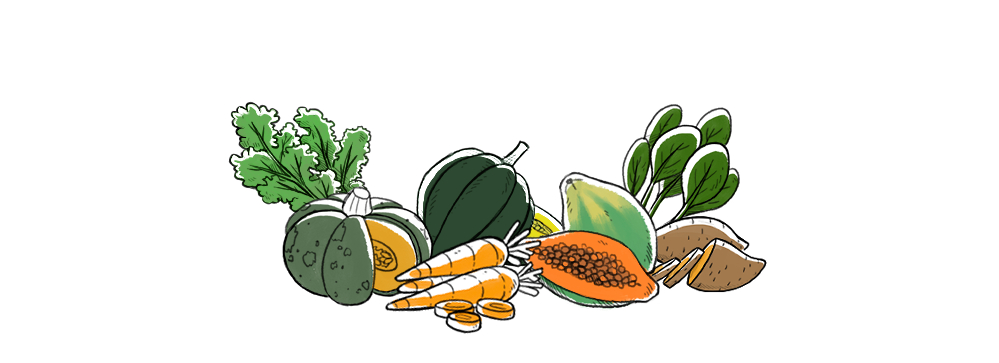
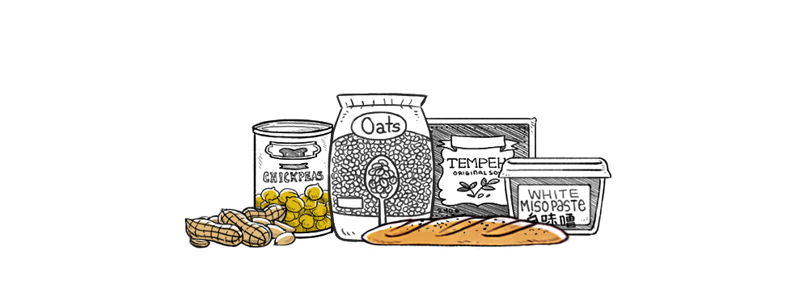

Nutrition
The information in this guide may change as research develops. If you are concerned about your intake of vitamin and minerals, we highly recommend seeing a dietitian who specializes in plant-based diets.
General rules:
- Eat at least 4 servings of vegetables per day.
- Eat at least 3 servings of legumes per day.
- Eat at least 4 servings of grains per day.
- Eat at least 3 servings of fruits per day.
- Eat at least 1 serving of seeds per day.
Protein
Proteins are necessary for the growth and repair of muscles, bones, hormones, digestive enzymes and to absorb nutrients. They are composed of 20 amino acids, 11 of which our bodies can synthesize. The other 9 must come from the food that we eat, they are called the 'essential amino acids'.
Sources
Consume 3-4 servings of:
- 1/2 cup of dried lentils or beans
- 1/2 cup tofu or tempeh
- 1 cup soy milk
- 1 cup quinoa or amaranth
- 1/4 cup peanuts(or, 2 tbsp peanut butter)
Every plant protein contain all 9 of the essential amino acids, but in varying amounts. The body maintains reserves of amino acids for later use, the proteins of one meal can combine with proteins from another meal eaten later that day.
Legumes are the best source of lysine, one of the essential amino acids. Quinoa and amaranth are two grains that are rich in lysine, although not as much as legumes.
Read more about proteins.
Iron
Iron is necessary for red blood cells and to form hemoglobins which helps circulate oxygen around the body. We lose some of this mineral everyday from the skin and intestines, menstruating women will lose a lot of it.
Sources
- Beans
- Soy (high in iron and not affected by phytic acid)
- Nuts
- Seeds
- Winter squashes
- Dark leafy greens
- Dried fruit
- Oatmeal
- Quinoa
- Pearled barley
- Whole grain bread
Iron-rich plant foods are high in phytic acid, a compound that binds to iron and other minerals and that makes it difficult for our bodies to absorb. Avoiding foods that contain phytic acid isn't necessary, but it's important to eat them in a way that minimizes their effects on iron.
Iron is plentiful in vegan diets, you can increase your absorption of this vitamin by adding vitamin C to your meals (can increase absorption by 4-6X), avoiding tea (chamomille or pepppermint) of coffee at meals, eating more legumes, eating fermented grains (like yeast-leavened bread), cooking foods in a cast iron skillet (as the iron leeches into the food), and by avoiding calcium with meals.
Other iron inhibitors include: turmeric and coriander, or calcium rich foods.
Read more about iron.
Calcium

Sources
Consume at least 3 1/2 to 4 cups a day of:
- Calcium-set tofu
- Cooked Chinese cabbage
- Turnip greens
- Mustard greens
- Collards
- Fortified plant milks (shake well before consuming)
- Fortified juices.
This, with extra servings of beans, broccoli, kale, okra, sweet potatoes, figs, corn tortillas, navel oranges and blackstrap molasses.
The amount of calcium in plant foods is somewhat dependent on the amount of calcium in the soil. The World Health Organization recommends 1,000mg of calcium per day, and 1,200mg if over 50, but what is most important is how much is truly absorbed. Most people absorb 25-30% of calcium. Absorption varies depending on food sources, so it's important to consume sources of well-absorbed calcium, like calcium-set tofu, kale, turnip greens, mustard greens and broccoli. Beans, nuts and seeds have moderate amounts of calcium and a slow absorption rate, soaking nuts and seeds aids in absorption. Fortified plant milk generally contains calcium with an absorption rate of 25%, similar to calcium-set tofu, although it is important to shake it before using it as the calcium tends to set at the bottom.
Oxalate molecules, found in certain plant foods (such as spinach, beets, beet greens, sweet potatoes, peanuts, rhubarb, and swiss chard), can prevent the absorption of calcium. Oxalates plays a part in calcium-oxalate kidney stones. Consuming calcium and high-oxalate foods is fine and necessary for good health, but it's important to drink plenty of fluids. Doing this helps oxalate and calcium “bind” to one another in the stomach and intestines before reaching the kidneys, making it less likely for kidney stones to form. Boiling high-oxalate greens before consumption and discarding the cooking water also helps.
Read more about calcium.
Vitamin D
Vitamin D can help prevent osteoporosis by increasing calcium absorption in the body.
We make plenty of vitamin D when our skin is exposed to sunlight, but because of smog, cloud coverage and sunscreen, we may be producing less than our body requires. Light-skinned people require 10-15 minutes in the sun, while dark-skinned people might need two hours. In winter, it is important to get a dietary source of this nutrient, especially for people with darker skin.
Sources
- The sun
- Fortified plant milk
- Fortified foods
- Fortified margarine
- Mushroom (UV ray-treated)
There are two forms of supplemental vitamin D:
- Ergocalciferol or D2
- Cholecalciferol or D3
D2 is vegan, made from exposing fungi to UV Rays, while D3 comes from fish oil or sheep's wool. Vitamin D2 is not as effective as vitamin D3 if taken weekly, it must be consumed daily.
Read more about vitamin D.
Vitamin B-12
Vitamin b-12 is needed for the production of DNA and for maintaining nerve cells. Levels need to be over 400 pg/ml — or 4 to 6 mcg per day — for good health. This vitamin does not occur naturally in any plant.
Sources
- Fortified plant milks
- Fortified foods
- Nutritional yeast
- Cyanocobalamin Supplements
Eat two servings a day of fortified foods that contain at least 2-3.5 mcg of vitamin B12, these need to be consumed at least 4h apart for optimal absorption. Another way, is to take a daily supplement of cyanocobalamin B12 that provides 25-100 mcg of vitamin B12, or a supplement that provides 1,000 mcg twice per week.
Absorption of vitamin b-12 is tricky, because small amounts attach to receptors that become quickly saturated by just 1-2 mcg of B12 and will stay like this for several hours. This is what you get from a single meal of fortified foods. Ingesting a large dose of B12 from a supplement, you can absorb the excess that can't latch onto receptors, but that is a very small amount. It is easier to meet needs from many small servings of B12 to be eaten throughout the day, but if you rely on daily single-dose supplements you need to have a lot more since absorption rates are very low.
Read more about vitamin B12.
Iodine
Iodine is necessary for healthy thyroid function which regulates our metabolism.
Sources
- Some fortified plant milks (few are fortified with it)
- Iodized salt, 1/4 tsp/day
- Seaweed
A quantity of 90 micrograms is recommended daily.
Note that the amount of iodine in seaweed and other sea vegetables is variable, it is the same for sea salt and other natural salts. The only reliable sources are iodized salt or a supplement.
Read more about iodine.
Omega-3
Omega3's are needed for optimal cognition, and helps reduce blood clotting (which protects against heart attacks).
Sources
- Chia seeds, 1 tsp | 713mg
- Flax seeds, 1 tsp, ground | 570mg
- Soybeans, cooked, 1/2 cup | 500mg
- Tofu, 1 cup | 400mg
- Tempeh, 1 cup | 400mg
- Canola oil, 1 tsp | 433mg
- Flaxseed oil, 1/4 tsp | 608mg
There are 3 omega-3 fatty acids:
- Alpha linolenic (ALA), found in soy, walnuts, canola oil, flaxseeds, hemp seeds oil etc. The body cannot produce its own.
- Eicosapentaneoic acid (EPA), found in small amounts in seaweed.
- Docosahexaneoic acid (DHA), found in small amounts in seaweed. The body can convert EPA into DHA.
Adult males require 1,600 mg/day while females require 1,100 mg/day of ALA. The numbers vary for babies, infants and pregnant women. To be safe, it is recommended to take 200-300 mg of DHA per day.
Read more about omega-3's.
Vitamin A
Vitamin A is important for growth and developments in young children, and for red blood cell formation.
Sources
Consume 2 or more per day.
- Butternut squash
- Pumpkin
- Sweet potatoes
- Kale
- Carrots
- Spinach
- Kale
- Cantaloupe
The body can convert 50 carotenoids into vitamin A, the most common being beta-carotene. Eating vegetables high in carotenoids (carrots, pumpkin etc) with some fat increased the absorption and synthesis of Vitamin A.
Read more about vitamin A.
Zinc
Zinc is important for immunity.
Sources
- Chickpeas, 1/3 cup (cooked)
- Peanuts, 1/4 cup (raw)
- Oatmeal, 1 cup (cooked)
- Tempeh, 1/2 cup
- Bread
Adult males (19-50yrs) require 11mg/day, while adult females (19-50yrs) require 40mg/day. These amounts vary for newborns, infants, teens, pregnant/breastfeeding women and older adults.
Phytates, found in some plant foods, reduce zinc absorption. This is why it's important to increase our intake of zinc by at least 50%. Consuming protein — like legumes, leavened bread, fermented soy foods (miso or tempeh) and nuts – increases zinc absorption.
Read more about zinc.
Nutrition References
- Fortification basics
- The vegan RD
- Vegan Health
- Nutrition Facts
- Open Food Facts
- Information last updated on 15/11/19
See a mistake? Make a pull request on Github. Or contact us on twitter or mastodon.